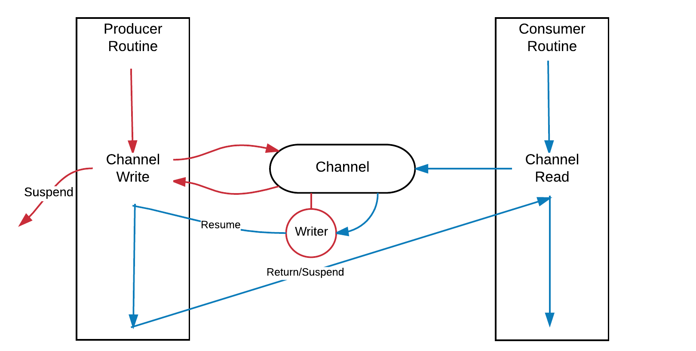
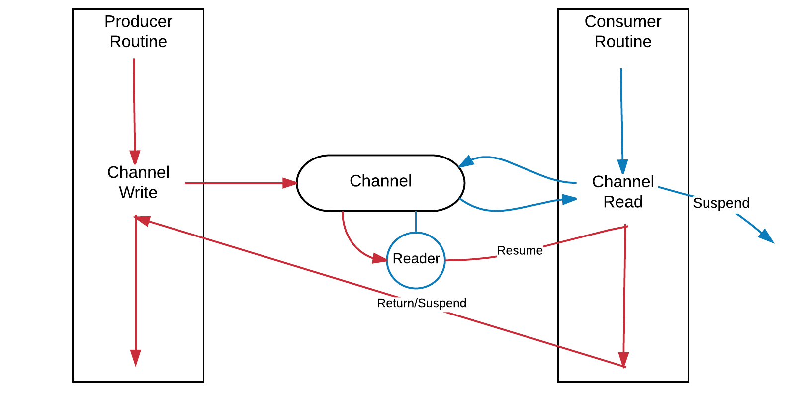

Read/Write
Current version uses helper types to use channel in a designed manner. The types implements awaitable interface that is required by co_await operator.
namespace coro { template <typename T, typename M> class reader; template <typename T, typename M> class writer; } // namespace coro
See Also
- Channel Concept
- Go Channel types
- CppCon 2016: John Bandela "Channels - An alternative to callbacks and futures"
Example
- test/channel_read_write_mutex.cpp
- test/channel_write_read_mutex.cpp
- test/channel_write_fail_after_close.cpp
- test/channel_read_fail_after_close.cpp
Awaitable Channel Read
Short Example
using namespace coro; template <typename T, typename M> auto read_from(channel<T, M>& ch) -> no_return { auto [value, ok] = co_await ch.read(); // you can use `std::tie` if(ok == false){ // ok is `false` if channel is closed. // access to the channel will lead to undefined behavior } // ok is `true` if the operation was successful. // the value is moved from writer coroutine to reader coroutine. }
Reader
The type supports move operation, but it is unecessary in general.
template <typename T, typename M> class reader final { public: using pointer = T*; using channel_type = channel<T, M>; private: mutable pointer ptr; // Address of value mutable void* frame; // Resumeable Handle union { reader* next = nullptr; // Next reader in channel channel_type* chan; // Channel to push this reader }; private: explicit reader(channel_type& ch) noexcept(false); public: bool await_ready() const noexcept(false); void await_suspend(coroutine_handle<void> rh) noexcept(false); auto await_resume() noexcept(false) -> std::tuple<value_type, bool>; };
| Function | Description |
|---|---|
await_ready |
Returns true if there is a waiting writer instance in the channel |
await_suspend |
Start waiting in the channel's reader list |
await_resume |
Resumes both writer and ifself when the read was successful. Returned tuple containes false if the channel is going to be destroyed(closed). |

Awaitable Channel Write
Short Example
using namespace coro; template <typename T, typename M> auto write_to(channel<T, M>& ch, T&& value) -> no_return { auto ok = co_await ch.write(value); // call by reference (T&) if(ok == false){ // ok is `false` if channel is closed. // access to the channel will lead to undefined behavior } // ok is `true` if the operation was successful. // the value is moved from writer coroutine to reader coroutine. }
Writer
The type supports move operation, but it is unecessary in general.
template <typename T, typename M> class writer final { public: using pointer = T*; using channel_type = channel<T, M>; private: mutable pointer ptr; // Address of value mutable void* frame; // Resumeable Handle union { writer* next = nullptr; // Next writer in channel channel_type* chan; // Channel to push this writer }; private: explicit writer(channel_type& ch, pointer pv) noexcept(false); public: bool await_ready() const noexcept(false); void await_suspend(coroutine_handle<void> _rh) noexcept(false); bool await_resume() noexcept(false); };
| Function | Description |
|---|---|
await_ready |
Returns true if there is a waiting reader instance in the channel |
await_suspend |
Start waiting in the channel's writer list |
await_resume |
Resumes both reader and ifself the write was successful. Return false if the channel is going to be destroyed(closed). |
